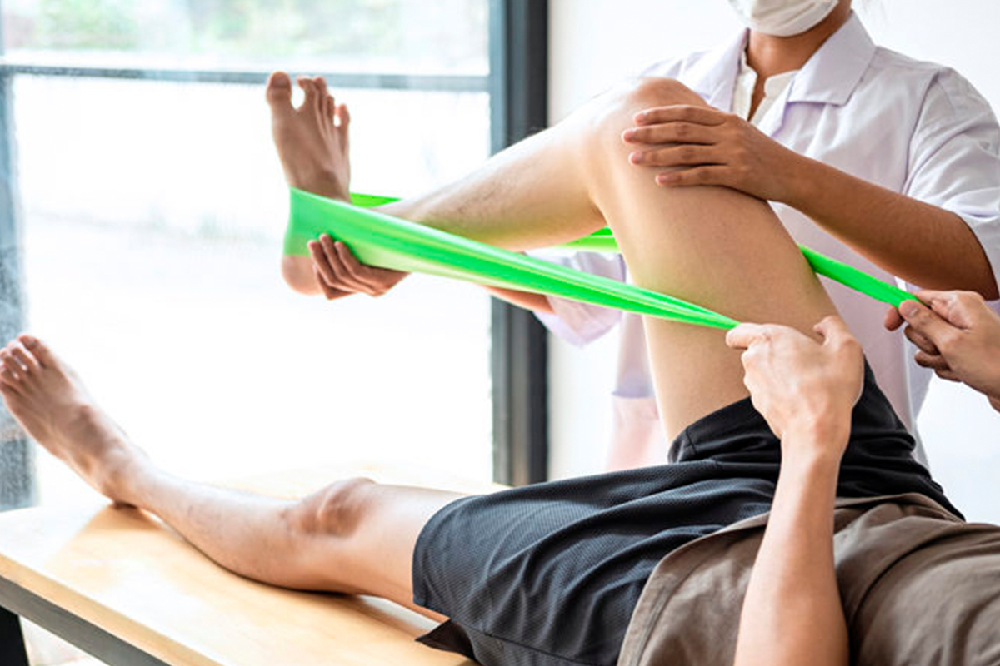

Se trata lesiones o patologías que afectan el sistema musculo-esquelético, como lesiones musculares, óseas. Además de nerviosas provocadas por algún accidente. También se tratan malformaciones, ya sean congénitas o adquiridas con el tiempo.
¿Que servicio de terapia física brindan?
Nuestro servicio de terapia física incluye la recuperación del paciente despues de algun trauma, esguince, fracturas, tendinitis y lesión deportiva. Durante la terapia utilizamos diferentes equipos como: Comprensas calientes, electroterapias, ultrasonidos, masajes y bolsas de hielo. Con nuestro tratamiento deseamos ayudar a reincoporar al paciente a la sociedad y que pueda volver a tener su estilo de vida del pasado.


Personalización
Brindamos servicios personalizados para cada paciente y su respectivo tratamiento.

Rapidez
Contamos con el equipo y personal capacitado para brindar un servicio rápido, adecuado y eficiente.

Atención A1
Tenemos un servicio de buena calidad, donde nuestra atención A1 nos diferencia de la competencia.
Fisioterapia traumatológica
Fisioterapia deportiva
Se tratan lesiones que tienen lugar en personas que realizan la práctica de cualquier deporte. Esta fisioterapia es mucho más dinámica que la fisioterapia traumatológica, ya que los pacientes necesitan tener una evolución más rápida teniendo mejor adaptación a ella, permitiéndonos utilizar diferentes técnicas y métodos.
Fisioterapia geriática
Se enfocada a atender a ese sector de la población, no solo va enfocada a tratar esos cambios, también a prevenir su avance y el tratamiento de diferentes lesiones y patologías. Se utiliza el ejercicio terapéutico como base de sus tratamientos y también diferentes técnicas y actividades.